Introduction
Ce TP va se dérouler en 3 parties :
- récupérer les sources du projet et les brancher sur l'intégration continue,
- développer une nouvelle fonctionnalité,
- la déployer automatiquement dans le cloud.
Afin de pouvoir réaliser ce TP dans de bonnes conditions, il vous faut créer des comptes sur les services suivants :
- github : service d'hébergement et de versionning de code source,
- codeship : service permettant de réaliser des traitements d'intégration continue,
- heroku : service d'hébergement d'applications.
Configurer l'intégration continue
Notre objectif pour cette étape est de récupérer les sources du projet et de configurer un job d'intégration continue qui va compiler et exécuter nos tests unitaires, d'intégration et de comportement.Récupération des sources du projet
Connectez-vous github et allez sur la page du projet. Puis "forker" le projet. Ceci aura pour action de "copier" le projet dans votre compte github.
Ensuite, depuis une console, exécuter les commandes suivantes :
$ git clone git@github.com:your_login/shopping-list.git
$ cd shopping-listVous êtes à racine du projet. Celui-ci est structuré avec maven afin de pouvoir compiler et exécuter les tests simplement. Pour valider que tout fonctionne, exécuter la commande suivante :
$ mvn clean compileVous devez obtenir un message de réussite :
[INFO] Scanning for projects...
[INFO]
[INFO] ------------------------------------------------------------------------
[INFO] Building shopping-list 1.0-SNAPSHOT
[INFO] ------------------------------------------------------------------------
[INFO]
[INFO] --- maven-clean-plugin:2.5:clean (default-clean) @ shopping-list ---
[INFO]
[INFO] --- maven-resources-plugin:2.6:resources (default-resources) @ shopping-list ---
[INFO] Using 'UTF-8' encoding to copy filtered resources.
[INFO] skip non existing resourceDirectory /Users/pvardanega/dev/sources/shopping-lists-master/src/main/resources
[INFO]
[INFO] --- maven-compiler-plugin:3.1:compile (default-compile) @ shopping-list ---
[INFO] Changes detected - recompiling the module!
[INFO] Compiling 6 source files to /Users/pvardanega/dev/sources/shopping-lists-master/target/classes
[INFO] ------------------------------------------------------------------------
[INFO] BUILD SUCCESS
[INFO] ------------------------------------------------------------------------
[INFO] Total time: 1.930 s
[INFO] Finished at: 2015-02-17T17:17:53+01:00
[INFO] Final Memory: 17M/170M
[INFO] ------------------------------------------------------------------------Le projet compile, tout va bien !
Exécution des tests
Ce projet contient déjà quelques fonctionnalités. Elles sont testées mais pour s'assurer que le code correspond aux besoins, nous allons exécuter tous les tests
Tests unitaires
Nous allons lancer les tests unitaires en exécutant la commande suivante :
$ mvn clean testVous devez obtenir un message de réussite :
[INFO] Scanning for projects...
[INFO]
[INFO] ------------------------------------------------------------------------
[INFO] Building shopping-list 1.0-SNAPSHOT
[INFO] ------------------------------------------------------------------------
[...]
[INFO] --- maven-surefire-plugin:2.12.4:test (default-test) @ shopping-list ---
[INFO] Surefire report directory: /Users/pvardanega/dev/sources/shopping-lists-master/target/surefire-reports
-------------------------------------------------------
T E S T S
-------------------------------------------------------
Running fr.xebia.shoppinglist.users.UserRepositoryTest
Tests run: 2, Failures: 0, Errors: 0, Skipped: 0, Time elapsed: 0.074 sec
Running fr.xebia.shoppinglist.users.UsersResourceTest
Tests run: 2, Failures: 0, Errors: 0, Skipped: 0, Time elapsed: 0.373 sec
Results :
Tests run: 4, Failures: 0, Errors: 0, Skipped: 0
[INFO]
[INFO] --- jasmine-maven-plugin:1.3.1.5:test (default) @ shopping-list ---
[...]
-------------------------------------------------------
J A S M I N E S P E C S
-------------------------------------------------------
[INFO]
Create account controller
it should initiate AccountCreationCtrl
should send account creation to backend
My account controller
it should initiate MyAccountCtrl
it should create one new shopping list
Application routes
should map routes to controllers
Results: 5 specs, 0 failures
[INFO] ------------------------------------------------------------------------
[INFO] BUILD SUCCESS
[INFO] ------------------------------------------------------------------------
[INFO] Total time: 5.619 s
[INFO] Finished at: 2015-02-17T21:59:43+01:00
[INFO] Final Memory: 29M/275M
[INFO] ------------------------------------------------------------------------Tests d'intégration
Nous allons lancer les tests d'intégration en exécutant la commande suivante :
$ mvn clean verify -PitVous devez obtenir un message de réussite :
[...]
-------------------------------------------------------
T E S T S
-------------------------------------------------------
Running fr.xebia.shoppinglist.it.shoppinglists.NewListsIT
Tests run: 1, Failures: 0, Errors: 0, Skipped: 0, Time elapsed: 2.772 sec - in fr.xebia.shoppinglist.it.shoppinglists.NewListsIT
Running fr.xebia.shoppinglist.it.users.NewAccountIT
Tests run: 1, Failures: 0, Errors: 0, Skipped: 0, Time elapsed: 0.064 sec - in fr.xebia.shoppinglist.it.users.NewAccountIT
Results :
Tests run: 2, Failures: 0, Errors: 0, Skipped: 0
[...]
[INFO] ------------------------------------------------------------------------
[INFO] BUILD SUCCESS
[INFO] ------------------------------------------------------------------------
[INFO] Total time: 11.156 s
[INFO] Finished at: 2015-02-17T22:44:36+01:00
[INFO] Final Memory: 39M/211M
[INFO] ------------------------------------------------------------------------Tests de comportement
Nous allons lancer les tests de comportement en exécutant la commande suivante :
$ mvn clean verify -PatVous devez obtenir un message de réussite :
[...]
-------------------------------------------------------
T E S T S
-------------------------------------------------------
Running fr.xebia.shoppinglist.it.shoppinglists.NewListsIT
Tests run: 1, Failures: 0, Errors: 0, Skipped: 0, Time elapsed: 2.772 sec - in fr.xebia.shoppinglist.it.shoppinglists.NewListsIT
Running fr.xebia.shoppinglist.it.users.NewAccountIT
Tests run: 1, Failures: 0, Errors: 0, Skipped: 0, Time elapsed: 0.064 sec - in fr.xebia.shoppinglist.it.users.NewAccountIT
Results :
Tests run: 2, Failures: 0, Errors: 0, Skipped: 0
[...]
[INFO] ------------------------------------------------------------------------
[INFO] BUILD SUCCESS
[INFO] ------------------------------------------------------------------------
[INFO] Total time: 11.156 s
[INFO] Finished at: 2015-02-17T22:44:36+01:00
[INFO] Final Memory: 39M/211M
[INFO] ------------------------------------------------------------------------C'est super, tous nos tests sont verts. Malheureusement, c'est un peu laborieux de lancer les tests manuellement avant chaque commit/push sur github. Pour éviter cela, nous allons créer un job d'intégration continue qui s'en chargera à notre place.
Configurer un job d'intégration continue
Connectez-vous sur codeship pour créer un nouveau job d'intégration continue.
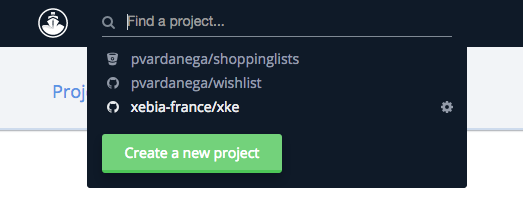Ensuite, il faut que codeship puisse accéder aux sources du projet afin de pouvoir les récupérer pour exécuter des actions.
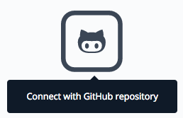Puis configurer le job pour qu'il compile les sources et exécute les test unitaires.
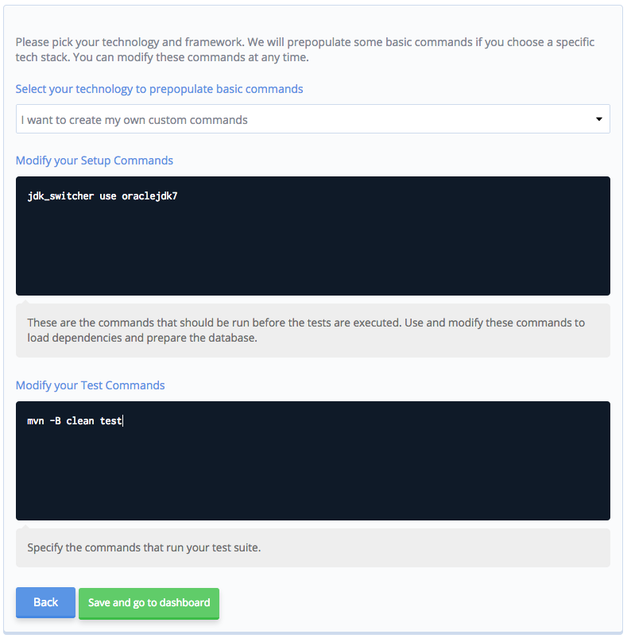Sauvergarder et observer l'exécution du job :
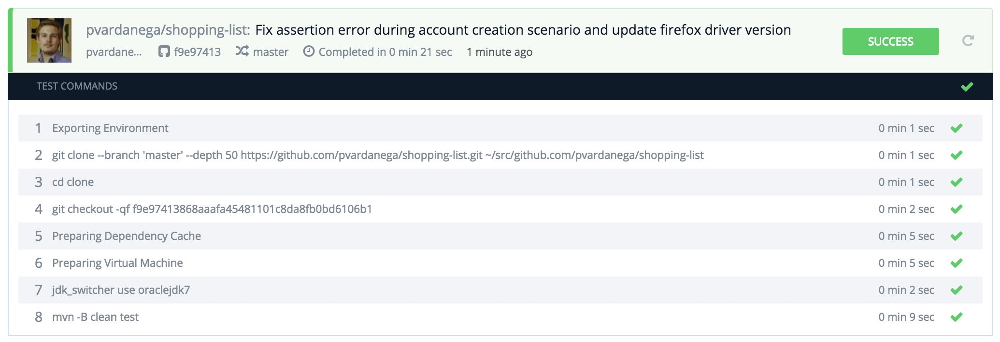Modifier la configuration des tests du job en ajoutant l'exécution des tests d'intégration.
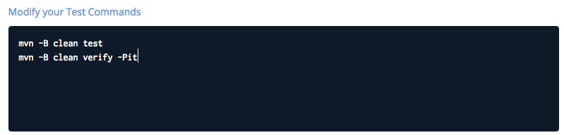Et relancer un build.
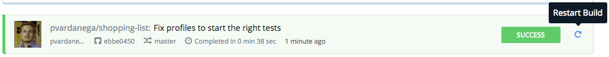Enfin, faites de même avec les tests d'acceptance.
Nouvelle fonctionnalité
Nous allons développer la fonctionnalité permettant d'ajouter des produits à une liste.
Ajouter une test d'acceptance
Ajouter un scénario de test dans la fichier shopping-list.feature
Scenario:
Given Claire, an existing user
And she creates a new list with title 'Romantic dinner'
When she adds 'candels' in the list 'Romantic dinner'
Then the list 'Romantic dinner' contains the product 'candels'Puis implémenter les steps dans la classe ShoppingListStepdefs.java :
@When("^she adds '(.*)' in the list '(.*)'$")
public void she_adds_candels_in_the_list(String product, String listTitle) throws Throwable {
new WebDriverWait(webDriver, SECONDS.toSeconds(1L)).until(presenceOfElementLocated(className("shopping-list")));
webDriver.findElement(linkText(listTitle)).click();
assertThat(webDriver.findElement(id("products"))).isNotNull();
webDriver.findElement(id("newProduct")).sendKeys(product);
webDriver.findElement(id("btnAddProduct")).click();
}
@Then("^the list '(.*)' contains the product '(.*)'$")
public void the_list_contains_the_product_candels(String listTitle, String product) throws Throwable {
assertThat(webDriver.findElement(id("products"))).isNotNull();
assertThat(webDriver.findElement(xpath("(//h3)[1]")).getText()).isEqualTo(listTitle + " (1)");
assertThat(webDriver.findElements(className("product"))).hasSize(1);
WebElement existingProduct = webDriver.findElements(className("product")).get(0);
assertThat(existingProduct.getText()).isEqualTo(product);
}Enfin, démarrer le serveur et exécuter les tests d'acceptance qui doivent être en échec.
Développer la vue
Créer la vue list.html dans le répertoire "views" :
CODE HTML ICIAfin quelle soit accessible, il nous faut :
- configurer une route permettant d'y accéder,
- définir un lien qui pointerait vers cette page.
Définition de la route
Nous allons modifier le fichier app.js qui contient la définition des routes. Pour celà, nous allons d'abord modifier le test validant les routes dans le fichier routesSpec.js en ajoutant les deux assertions suivantes :
expect($route.routes['/lists/:listId'].templateUrl).toEqual('views/list.html');
expect($route.routes['/lists/:listId'].controller).toEqual('listCtrl');Relancer les tests unitaires :
$ mvn jasmine:testLe test sur les routes devrait échouer.
Modifier le fichier app.js et ajouter la route :
when('/lists/:listId', {
templateUrl: 'views/list.html',
controller: 'listCtrl'
}).On y définie l'URL pour accéder à la page, le template html ainsi que le contrôleur qui gère le contenu de la vue.
Relancer les tests unitaires :
$ mvn jasmine:testLe test sur les routes devrait passer.
Appeler cette page depuis une autre page
Nous allons maintenant pouvoir afficher le détail d'une liste de courses en cliquant sur son nom :
MODIFIER LE FICHIER me.htmlDévelopper le contrôleur en TDD
Nous allons créer le contrôleur 'listCtrl.js' en commençant par les tests.
Son rôle est de faire le lien en la vue et le serveur.Ajout d'un test unitaire
Créer le fichier 'src/test/javascript/listControllerSpec.js' :
'use strict';
describe('Manage list controller', function() {
var httpBackend,
scope,
ctrl,
param,
list = {id: 1, title: "MyList", products: ["milk", "eggs", "pastas"]};
beforeEach(module('shopping-list'));
beforeEach(inject(function(_$httpBackend_, $rootScope, $controller, $routeParams) {
httpBackend = _$httpBackend_;
scope = $rootScope.$new();
param = $routeParams;
param.listId = 12;
ctrl = $controller('listCtrl', {$scope: scope});
httpBackend.whenGET('/lists/12').respond(200, list);
}));
it('it should initiate ListCtrl', function() {
httpBackend.flush();
expect(scope.list).toEqual(list);
expect(scope.newProduct).toBeDefined();
});
});Relancer les tests unitaires :
$ mvn jasmine:testLe test sur du contrôleur devrait échouer.
Implémentation du controleur la plus simple possible pour faire passer le test
Créer le fichier 'src/main/webapp/js/listCtrl.js' :
shoppingList.controller('listCtrl', [ '$scope', '$http', '$routeParams', function($scope, $http, $routeParams) {
$scope.newProduct = "";
$scope.list = {};
$http.get('/lists/' + $routeParams.listId)
.success(function (data) {
$scope.list = data;
})
;
}]);L'inclure dans l'application (modifier le fichier 'index.html') :
MODIFIER index.htmlEt le plugin jasmine de maven en :
MODIFIER LE POM.XMLRelancer les tests unitaires :
$ mvn jasmine:testLe test sur du contrôleur devrait passer.
Ajouter un test qui permet d'ajouter un produit à la liste
Test :
it('should add a product and notify the server', inject(function() {
scope.newProduct = "salad";
httpBackend
.whenPOST('/lists/12/products', scope.newProduct)
.respond(201, scope.newProduct);
scope.addProductToList();
httpBackend.flush();
httpBackend.expectPOST('/lists/12/products');
expect(scope.list.products).toContain(scope.newProduct);
}));Implémentation :
$scope.addProductToList = function () {
$http.post('/lists/' + $routeParams.listId + '/products', $scope.newProduct)
.success(function (data) {
$scope.list.products.push(data);
}
);
};Ajouter un test d'intégration sur l'API REST
Créer la ressource REST en TDD
Relancer le test d'intégration
Relancer le test d'acceptance
Committer et pusher la fonctionnalité
Déployer l'application dans le cloud
Dans cette partie, nous allons tout d'abord créer une "application" sur heroku qui se chargera d'héberger notre application.
Création de l'instance qui hébergera notre application
Se connecter sur le site heroku.com et créer une nouvelle application.
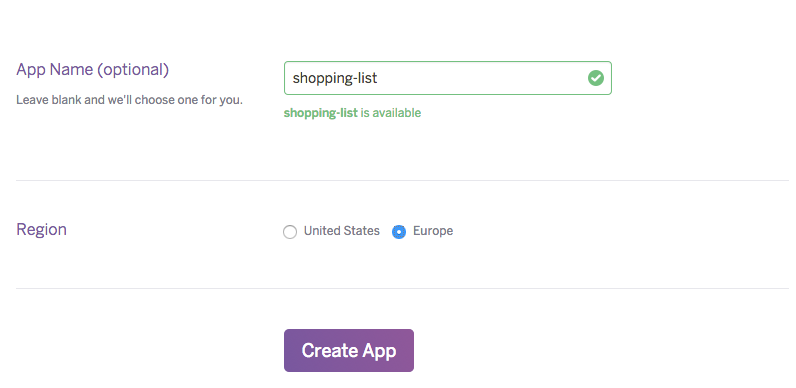Ajouter un worker à l'application, ce qui correspond à une unité de calcul. Ceci alloura de la mémoire et du CPU à votre application.
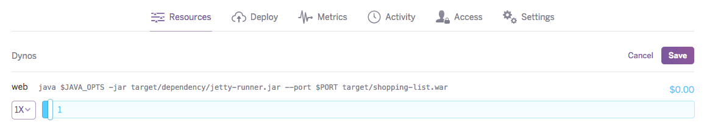Ensuite, revenir dans le répertoire source de votre projet puis ajouter une "remote" à la configuration git et pusher le code source sur cette remote :
$ git remote add heroku git@heroku.com:shopping-list.git
$ git push heroku masterLe résultat doit être le suivant :
Fetching repository, done.
Counting objects: 25, done.
Delta compression using up to 8 threads.
Compressing objects: 100% (21/21), done.
Writing objects: 100% (25/25), 3.62 KiB | 0 bytes/s, done.
Total 25 (delta 8), reused 0 (delta 0)
-----> Java app detected
-----> Installing OpenJDK 1.7... done
[...]
[INFO] ------------------------------------------------------------------------
[INFO] BUILD SUCCESS
[INFO] ------------------------------------------------------------------------
[INFO] Total time: 6.941 s
[INFO] Finished at: 2015-02-18T16:07:01+00:00
[INFO] Final Memory: 30M/649M
[INFO] ------------------------------------------------------------------------
-----> Discovering process types
Procfile declares types -> web
-----> Compressing... done, 102.1MB
-----> Launching... done, v9
https://shopping-list.herokuapp.com/ deployed to HerokuAutomatisation du déploiement
Nous allons faire en sorte que chaque changement réalisé sur notre application soit déployé automatiquement lorsqu'un build se termine en succès.
Tout d'abord, connectez-vous sur codeship, sélectionner le projet et cliquer sur "Project settings" puis "Deployment". C'est dans cet écran que nous allons configurer le déploiement de notre application sur heroku.
Sélectionner Heroku comme étant notre hebergeur :
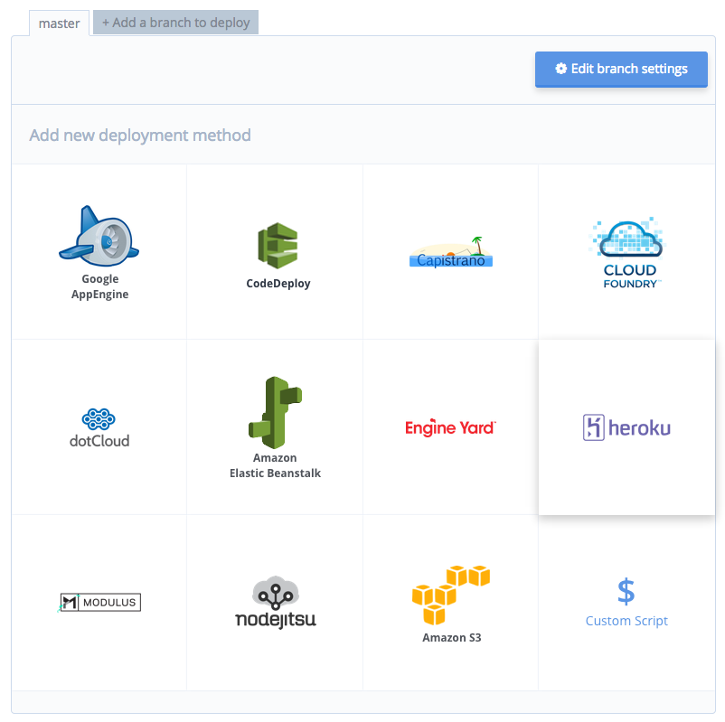Ensuite, remplissez les informations demandées :
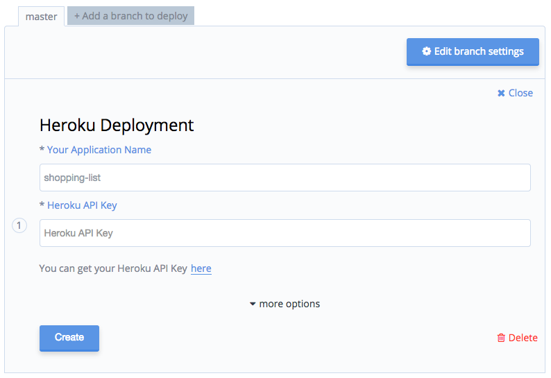La configuration est terminée ! Lors du prochain succès du job, l'application sera automatiquement déployée sur heroku.

Afin de valider le déploiment, nous allons modifier le fichier README.md pour afficher le bon status de l'intégration continue, le commiter, observer les changements sur codeship, la dernière étape doit concerné le déploiement. Votre application doit toujours être déployée.
Vous devez aussi observer un logo codeship de couleur grise, verte ou rouge (en fonction du résultat de la dernière exécution du job) sur la page principale de votre projet github.
Pour cela, aller dans le menu "Notifications" des "Settings du projet" et copier/coller les informations.
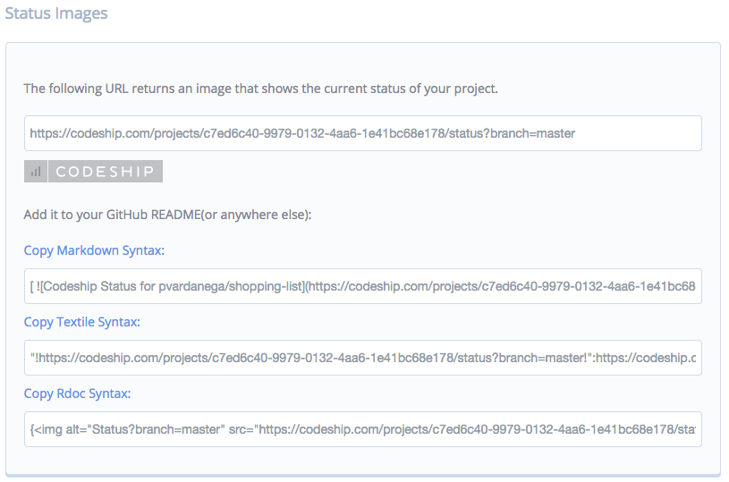Conclusion
Vous avez vu toutes les étapes pour ajouter une nouvelle fonctionnalité en ajoutant des tests, la tester puis la déployer automatiquement. En suivant cette démarche, vous êtes capable de faire évoluer votre application au fil de l'eau sans attendre plusieurs semaines/mois avant de mettre en production.